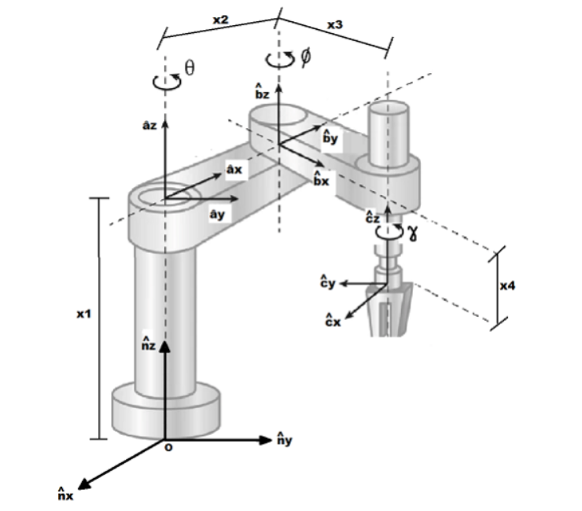
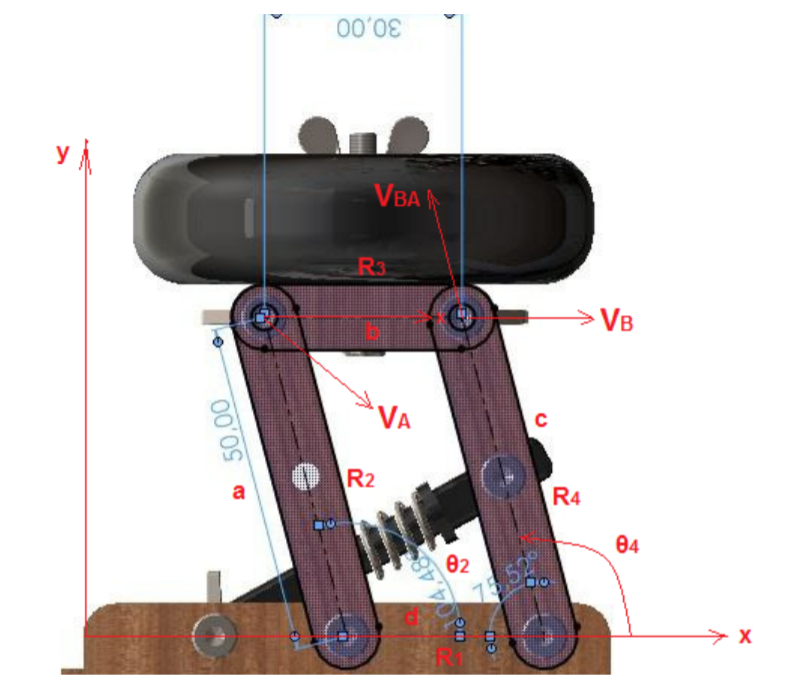
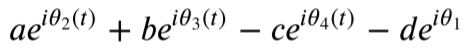

Estudante de Engenharia Mecânica e Técnico em Informática.
Meu repositório no GitHub.Projetos elaborados por mim em linguagem Pyhton.
Visualizar o código completo.

Após importar as bibliotecas sympy e sympy.physics.mechanics, os referenciais e as variáveis são declaradas para dar sequência aos cálculos da cinemática.
Referencial inercial:
N = ps.ReferenceFrame('N')Referenciais móveis:
A = N.orientnew('A','Axis',[theta,N.z])
B = A.orientnew('B','Axis',[phi,A.z])
C = B.orientnew('C','Axis',[gamma,B.z])Variáveis das distâncias entre as origens dos sistemas referenciais:
x1,x2,x3 = sy.symbols('x1 x2 x3')
x4 = ps.dynamicsymbols('x4')Variáveis dinâmicas:
theta,phi,gamma = ps.dynamicsymbols('theta phi gamma')Cinemática
Velocidades e acelerações angulares dos referenciais:
A.ang_vel_in(N)
A.ang_acc_in(N)
B.ang_vel_in(N)
B.ang_acc_in(N)
C.ang_vel_in(N)
C.ang_acc_in(N)Visualizar o código completo.

Para visualizar o modelo do mecanismo ir até o código completo.
Considerando que anteriormente em uma análise de posição foram calculados os valores de θ1, θ2 e θ3, assim como 𝑤2. Se sabe também os comprimentos dos elos 𝑅1, 𝑅2, 𝑅3 e 𝑅4.
Para descobrirmos então os valores de 𝑤3 e 𝑤4, assim também como as velocidades das juntas, foram realizados os procedimentos abaixo como segue.
𝑅2 + 𝑅3 - 𝑅4 - 𝑅1 = 0 #Equação vetorial da malha fechadaDeve-se importar então as bibliotecas necessárias para o desenvolvimento do programa.
from sympy import *
import numpy as ny
import matplotlib.pyplot as plta,b,c,d,t,theta1 = symbols('a b c d t theta1')theta2 = Function('theta2')(t)
theta3 = Function('theta3')(t)
theta4 = Function('theta4')(t)
e = E
i = Ieq1 = a*e**(i*theta2) + b*e**(i*theta3) - c*e**(i*theta4) - d*e**(i*theta1)A saída da equação 1 em formato de números complexos é:
